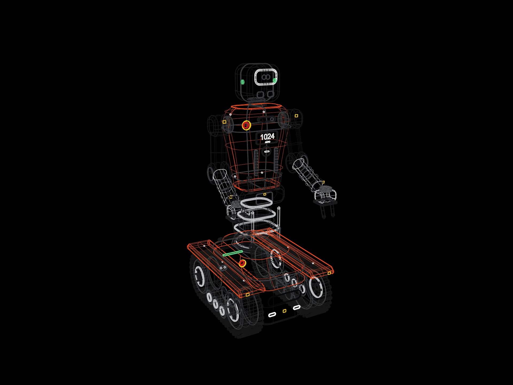
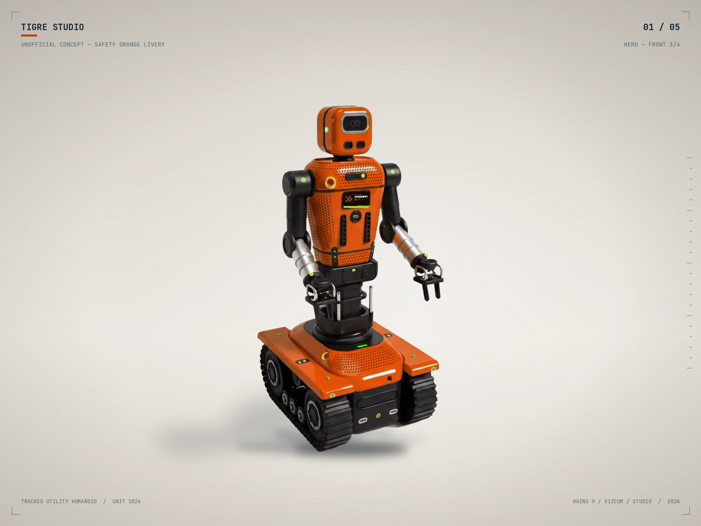
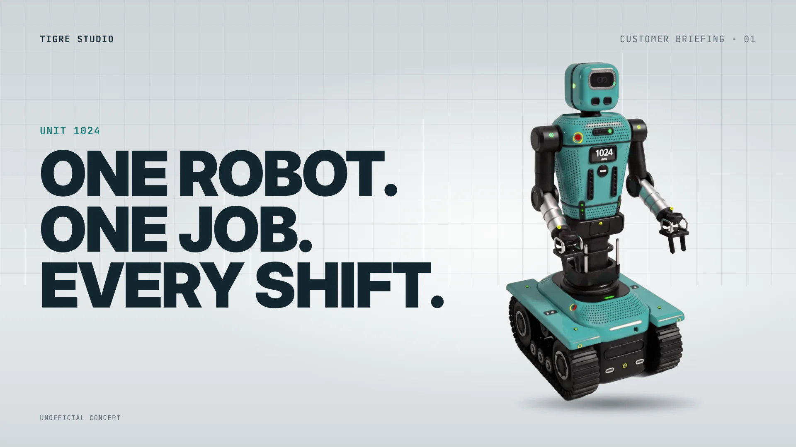
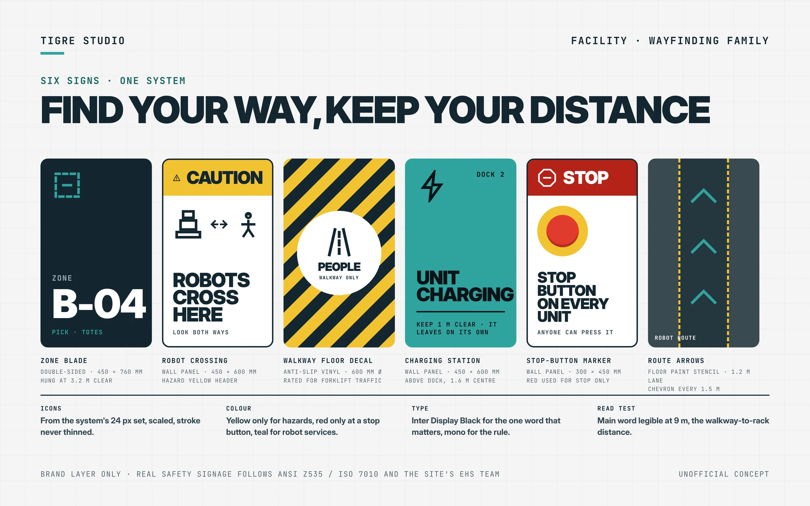

TIGRE STUDIOPORTFOLIO REVIEW · 20 MIN
A BRAND FOR A ROBOT FLEET
UNIT
1024
Henry Mauricio Ortega · Brand, motion and systems
Unofficial concept · not affiliated with or endorsed by Agility Robotics01
Hi, I'm Henry. I want to show one project end to end: a robot I modelled, and the whole brand I built around it. It's an unofficial concept, and I'll say clearly where things are simulated.
TIGRE STUDIO02 · THE BRIEF I SET
THE JOB, AS I READ IT
ONE BRAND,
EVERY FORMAT
A humanoid brand shows up on a trade-show wall, a factory floor, a sales deck and a feed in the same week. So I set myself the whole range, not one hero image.
- 01Booth, signage and floor graphics
- 02Collateral, slides, social, web, email
- 03Motion and an explainer film
- 04A mark, a design system and the rules
- 05Making a hard robotics idea clear to anyone
Unit 1024 · portfolio review02
I read the brand designer job description line by line and turned every responsibility into a deliverable. That's why the case study has a table mapping each line to a piece.
TIGRE STUDIO03 · THE ROBOT
RHINO 9 → VIZCOM
MODELLED,
THEN SHOT
A tracked utility humanoid modelled in Rhino 9. A C# script places six repeatable cameras. Vizcom turns viewport captures into studio renders with one written material direction.


Unit 1024 · portfolio review03
Left is the Rhino viewport, right is the final render. The camera rig is scripted so every view can be re-shot identically after a design change.
TIGRE STUDIO04 · LIVERY
RE-SKIN, DON'T REDRAW
ORANGE TO
CALM TEAL
A colour pass in Python moved the shells to teal over matte black. Safety red and marker yellow were masked out and never recoloured, because safety colour is not a brand moment.

Unit 1024 · portfolio review04
This shows I can work inside an existing system: same geometry, new brand language, safety colours protected.
TIGRE STUDIO05 · THE MARK
32 × 32 grid · 1,024 positions · 992 holes05
The mark is a perforated panel: a 32 by 32 grid, the unit's own number. The chevron never moves. The field is generated from the unit number.
TIGRE STUDIO06 · ONE RULE, EVERY UNIT
Seed(unit) → field · chevron = constant06
A fleet brand has to make a hundred robots look like one family and still be told apart on the floor. Same number, same mark, forever.
TIGRE STUDIO07 · ON THE MACHINE
Chest display · base-plate decal · composited in post07
The mark lives where the robot works: on its chest screen with a status colour, and as a decal sized to read from the walkway.
TIGRE STUDIO08 · DESIGN SYSTEM
UNIT SYSTEM V1.0
SO OTHERS
CAN USE IT
One tokens file drives colour, type, spacing and motion. 18 icons, 10 components, contrast checked against WCAG, a review checklist and a changelog.
tigrestudiodesign.github.io/robot-perforation/system08
A mark and a palette aren't a brand until other people can use them without me in the room. This is the part I'd bring to an in-house team.
TIGRE STUDIO09 · BUILT ONLY FROM THE PARTS
Simulated · no new components were made for this screen09
The proof the system works: a full operator screen made only from existing tokens and components. It's live on the site, so I can demo it.
TIGRE STUDIO10 · HOW IT SEES
COMPLEX IDEA, MADE CLEAR
SEE,
UNDERSTAND,
DECIDE
An interactive perception view: depth, named objects, a path that replans around people. Slow inside 3.2 m, wait inside 1.6 m.
Illustrative simulation · not real robot software10
The job asks to explain robotics and AI to every audience. This is my answer: show the robot's view, in the brand's colours, with honest labels.
TIGRE STUDIO11 · THE FILM
Ep. 01 Perception Stack · 78 s · Ep. 02 The Brand · 41 s · 25 s vertical cut11
I'll play the first 30 seconds of Ep. 01. Ep. 02 shows the identity as a system in 41 seconds. Every frame is drawn in code from the project's renders, tokens and simulation; the score is generated.
TIGRE STUDIO12 · IN USE




29 formats · booth, wayfinding, signage, collateral, slides, social, web, email, motion12
Same robot, same palette, same plain voice, across 29 formats, each mapped to a line in the job description.
TIGRE STUDIO13 · THE DETAILS
BRAND GUARDIAN, ON MYSELF FIRST
I CHECKED,
AND FIXED
- 01My boards said "1,024 holes". The corners cut 32. It's 992, corrected everywhere.
- 02My teal text failed AA at 4.33:1. Moved to teal-800, 6.52:1.
- 03An axe-core audit of the system site: zero violations outside the contrast specimens.
- 04Every number is measured, or labelled as a placeholder.
Unit 1024 · portfolio review13
Brand work for a robot company is a trust job. If the small things are wrong, nobody believes the big ones.
TIGRE STUDIO14 · HOW I WORK
16 YEARS OF TECHNICAL VISUAL COMMUNICATION
CLEAR FOR
THE FLOOR
Sixteen years making complex products clear for factories and engineers. Now: Rhino and Grasshopper for design, code for motion and systems, and a brand eye for all of it.
- 01Read the system before adding to it
- 02Ship the range, not one hero image
- 03Write the rules down so others can use them
- 04Say plainly what's real and what's simulated
Unit 1024 · portfolio review14
Talk about the technical-manual background: turning engineering into visuals people on a factory floor can act on is the same muscle as this brand.
TIGRE STUDIOTHANK YOU
ALL OF IT IS LIVE
QUESTIONS?
tigrestudiodesign.github.io/robot-perforation
…/robot-perforation/system
linkedin.com/in/henryortega
Unofficial concept · not affiliated with or endorsed by Agility Robotics15
Offer to demo the live console or the mark generator, and ask what the brand team is working on next.